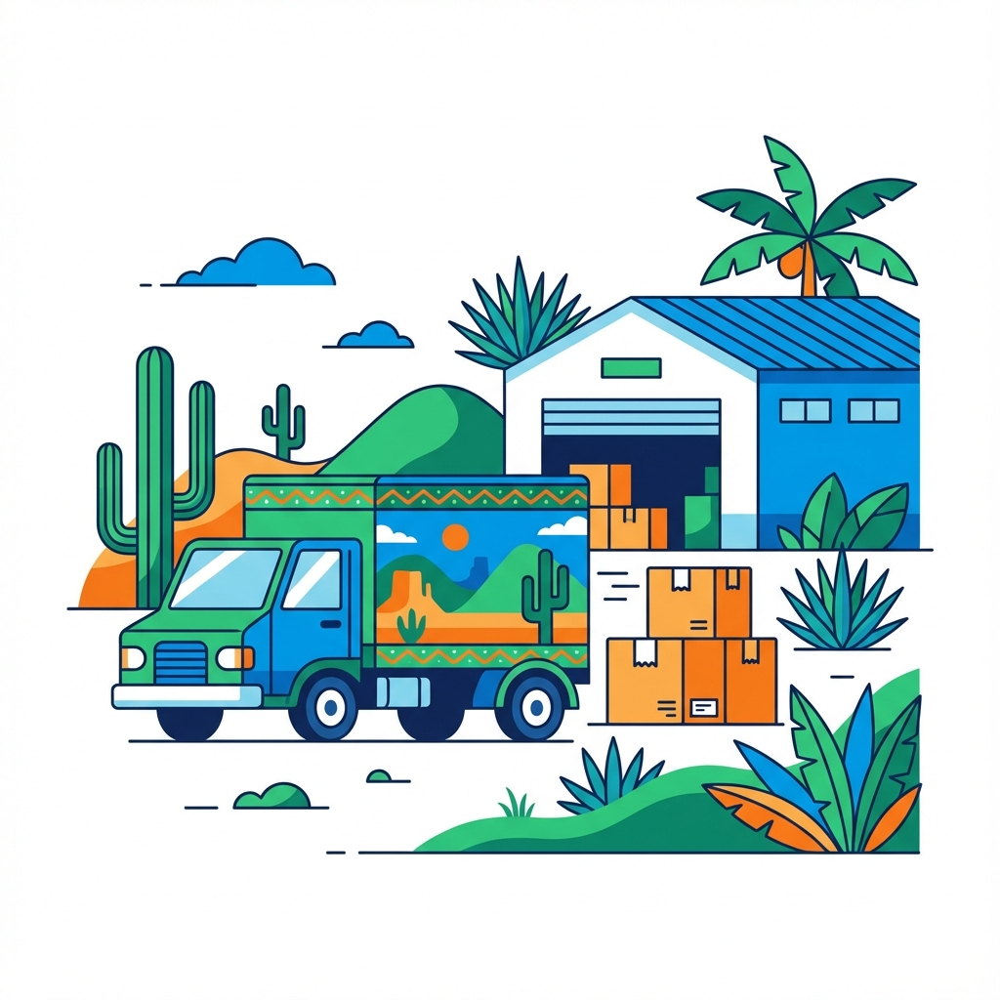
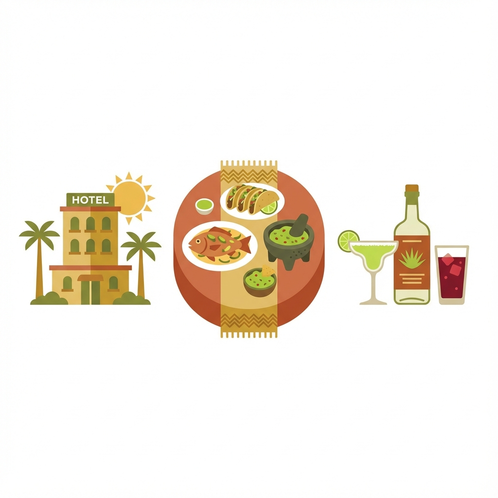

Introducción general del proyecto
Este proyecto propone un análisis integral de la Geografía de los Servicios en el estado de Veracruz, abordando cómo la localización, accesibilidad y concentración de servicios influyen en la dinámica económica y social de las regiones analizadas.
A partir del trabajo colaborativo de ocho integrantes, se exploraron cinco tipos de servicios en ocho regiones del estado. Los hallazgos muestran que el servicio de alojamiento temporal y preparación de alimentos y bebidas es particularmente representativo por su vínculo con el turismo regional, la diversidad gastronómica y su aporte a la actividad económica local.
Geografía de los Servicios
"El sector terciario son actividades económicas cuya finalidad es prestar servicios al consumidor o productores. Van desde educación, sanidad, hasta turismo y comercio."
Referencia: Antón, Burgos (2001)
Sector Servicios
"Abarca actividades relacionadas con la oferta de bienes y servicios: comercio, transporte, turismo, sanidad y cultura. Representa la evolución de las sociedades."
Referencia: IGN (Bachillerato)
Alojamiento y Alimentos
"Comprende unidades económicas dedicadas a alojamiento temporal (hoteles, cabañas) y preparación de alimentos para consumo inmediato."
Referencia: IIEG (2025) Sector 72
Objetivos
Objetivo General
Analizar la distribución y localización de los servicios, así como los factores que influyen en su organización y accesibilidad.
Objetivos Específicos
- Analizar la distribución espacial de los servicios de alojamiento y alimentos en Veracruz.
- Identificar factores que influyen en la oferta y demanda del servicio.
Planteamiento del Problema
Contexto del Estudio
Nuestro equipo de seis integrantes analizó cómo influyen los servicios en Veracruz, estudiando una región cada uno. Investigamos cinco servicios principales y concluimos que el servicio de alojamiento y la preparación de alimentos y bebidas es el más representativo en la mayoría de las regiones.
Alcance del Estudio
6
Regiones de Veracruz
5
Tipos de Servicios
Alojamiento y alimentos · Transporte · Salud · Educación · Esparcimiento
Justificación del Servicio Seleccionado
Decidimos enfocarnos en el sector de alojamiento y preparación de alimentos y bebidas por tres razones fundamentales:
Importancia Turística
Motor del desarrollo turístico regional
Variedad Regional
Diversidad gastronómica y cultural
Impacto Económico
Generación de empleo y derrama económica
Metodología
Proceso de Investigación
Recopilación de datos
Obtención de información del Directorio Estadístico Nacional de Unidades Económicas (DENUE) del INEGI
Clasificación de servicios
Categorización de las unidades económicas según el tipo de servicio prestado
Análisis espacial y cartografía temática
Elaboración de mapas interactivos y análisis de distribución geográfica de los servicios
Revisión de accesibilidad y distribución
Evaluación de la cobertura territorial y análisis de patrones de concentración espacial
Las 5 teorías vistas en clase
Walter Christaller
Teoría de los centros de mercado y jerarquía de centros.
August Lösch
Teoría de los centros de mercado y economías de la aglomeración.
Walter Isard
Distribución espacial de actividades económicas.
Harvey J. Miller
Accesibilidad y movilidad aplicadas a los servicios.
Paul Krugman
Teoría sobre economías de escala y centros de actividad.
Teoría Seleccionada
August Lösch: Teoría de los centros de mercado y economías de la aglomeración
La teoría de August Lösch fue elegida porque permite explicar de manera precisa cómo se distribuyen los servicios en el territorio según la demanda, la accesibilidad y el tamaño del mercado. Lösch plantea que cada actividad económica genera un área de influencia distinta y que los servicios se organizan en patrones espaciales flexibles, no rígidos, lo cual coincide con la distribución real observada en los datos del DENUE para Veracruz.
Los cinco servicios estudiados

Transportes, correos y almacenamientos

Servicios de alojamiento temporal y de preparación de alimentos y bebidas
Servicios educativos
Servicios de salud y de asistencia social
Servicios de esparcimiento cultural y deportivos, y otros servicios
Servicio seleccionado
El servicio de alojamiento temporal y preparación de alimentos y bebidas es el más representativo en las regiones analizadas, por su vínculo con el turismo, la actividad económica y la diversidad gastronómica del estado de Veracruz.
Elementos analizados
- Distribución espacial por municipio.
- Accesibilidad y conectividad.